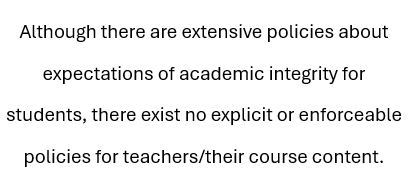
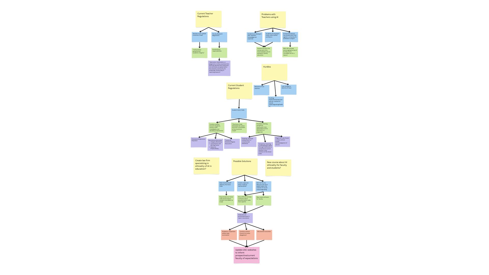
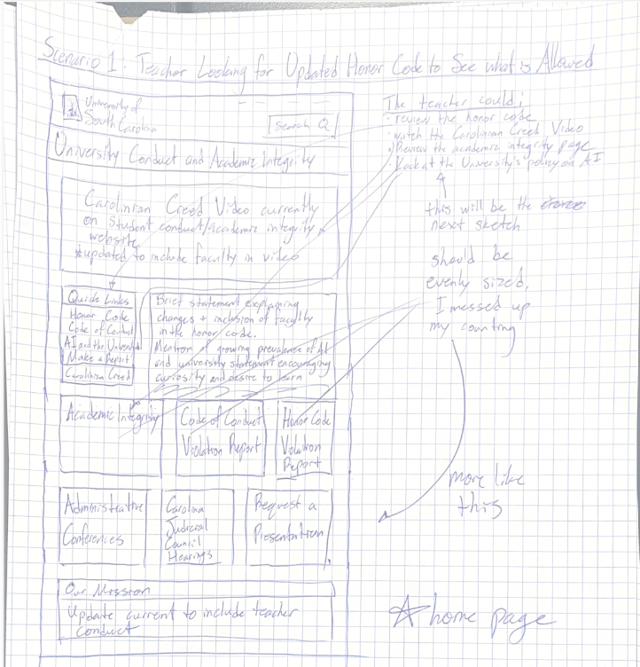

Problem Statement
Although there are extensive policies about expectations of academic integrity for students, there exist no explicit or enforceable policies for teachers/their course content.
Affinity Diagram
The main idea I focused on in this diagram was the current regulations and the problems therein. Then, I shifted my focus to possible solutions and the problems I would encounter along the way.
Sketches
My sketches represent what the website would look like in three scenarios: a teacher seeking information on the updates, a student making a report, and an admin reviewing reports.
A object-oriented Java program to read, display, and update a product inventory based on user input.

A JavaFX program to display the process of integrating using the Montecarlo Method and visualize the change in values as the number of samples increases.